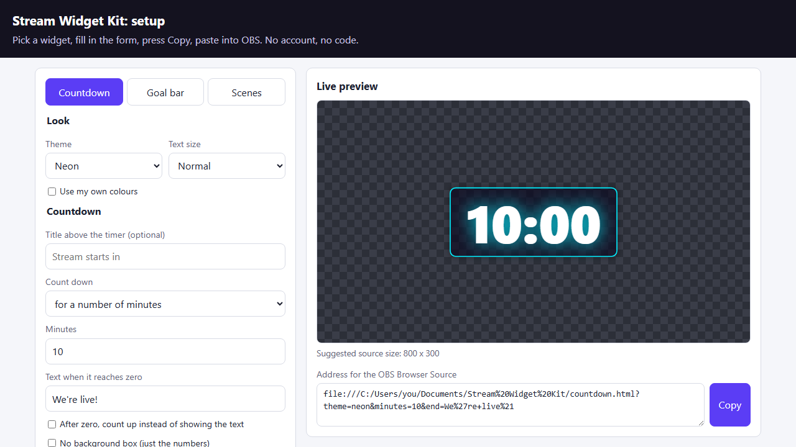
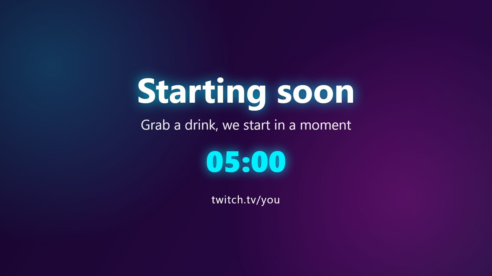
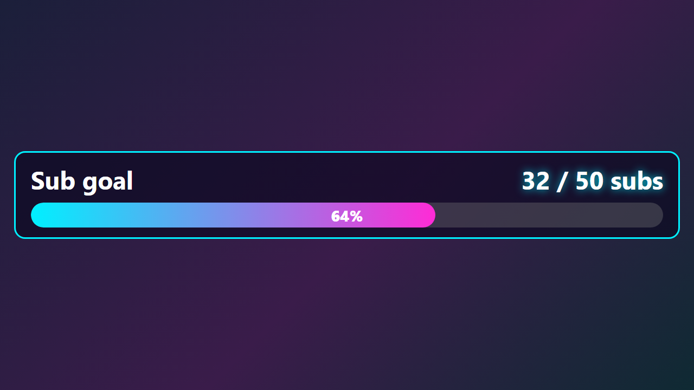

A countdown, a goal bar and your Starting Soon screen, set up in five minutes.
For streamers who want their scene to look finished without editing code or paying a monthly fee. Fill in a form, watch the preview, press Copy, paste the address into OBS.
Buy Stream Widget Kit for $5
You'll like this if
- You want a Starting Soon screen with a real countdown instead of a still image.
- You want a sub or donation goal bar on screen without signing up for another service.
- You tried a widget before and gave up on editing the file or following the readme.
Not for you if you need follow, sub or chat alerts, sounds, or anything that reads your Twitch account. This kit does none of that.
With the Stream Widget Kit you can
- Run a countdown for a number of minutes or to a clock time, with your own end text such as "We're live!".
- Show a goal bar with your label, amount and target, and move it during the stream from a small control panel docked inside OBS. The bar updates without a reload.
- Put up Starting Soon, Be Right Back or Ending screens with your title, subtitle and socials line.
- Pick one of three looks, Neon, Pastel or Minimal, so every widget matches.
- Run two goals at once by giving each its own Goal ID.


Set up in 4 steps
- Pay, press Download ZIP on your download page, and unzip it to a folder that will stay put.
- Double-click
setup.html. It opens in your browser. - Pick a widget, fill in the form, watch the preview, press Copy.
- In OBS: Sources, +, Browser. Paste the address into URL and set the size shown under the preview.
What you get
- Countdown, goal bar, goal control panel and scene screens
- The setup page that makes your OBS addresses
- Three matching looks for every widget
- A plain setup guide and a licence for use on any stream
If something goes wrong
- Refund: if it does not work in your setup, ask within 14 days of purchase and you get your money back.
- Help: open a request on our support page. Requests there are public, so never post card details or order numbers.
- Limits: the control panel only reaches the goal bar when both run inside OBS (the panel as a Custom Browser Dock). A minutes countdown restarts when OBS reloads the source; a clock-time countdown does not.
Questions
How do I get it after paying?
Stripe sends you straight to your download page. Bookmark it, press Download ZIP, unzip, and open setup.html. Lost the page? Open a support request and we will send the link again.
Does it work in Streamlabs?
We have tested it in OBS Studio only. Streamlabs Desktop also takes Browser Sources, but we have not checked it there. If it does not work for you, ask for a refund.
Do I need an account or a server?
No. Everything runs from the folder on your computer.
Will the goal bar update by itself from Twitch?
No. You move it with the control panel during the stream.
Can I use it on a monetised stream?
Yes. You may not resell or share the files.